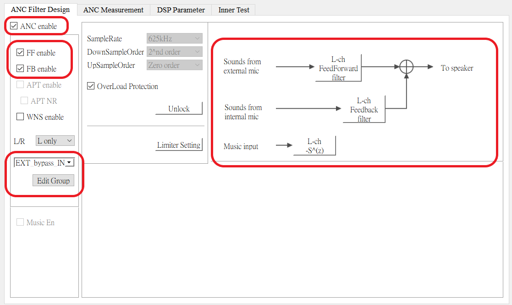

APP ANC Module Application Note
V1.1
2023/06/17
Revision History
| Version | Date | Description |
| V1.0.0.0 | 2021/10/21 | Stable Release |
| V1.1 | 2023/06/17 | Optimize content |
Contents
Table List
Figure List
Glossary
| Terms | Definitions |
| ANC | Active Noise Cancellation |
1 Introduction
The purpose of this document is to give an overview of ANC application.The following topics are included:
- Configuration in McuConfigTool
- Source code review
2 Anc Configuration
For products with more than one ANC scenario, when executing ANC scenario switch case, for example MMI 0xD1, valid ANC idx should be choosed from selected list.
The following flow chart gives an overview of ANC selected list generation. Including:
- Output ANC bin form ANC Design Tool
- Burn gain and activate ANC scenarios
- Selection from remote tool
- Configuration in McuConfigTool
Figure 2-1 ANC Selection
There can be 5 scenarios at most in ANC selected list.
2.1 AncDesignTool Configuration
For ANC effect, users need to configure ANC effect parameter for ear bud, which is called ANC scenario. Make sure to check ANC enable check box, and set the configurations that align with the setting in MCU config tool.

Figure 2-2 ANC Design Tool Setting
Click to "Edit Group", then users can configure different ANC scenarios.
Figure 2-3 Setting different ANC scenarios in ANC Design Tool
2.2 McuConfigTool Configuration
ANC can be enabled by changing some setting in "HW Feature" page and "Audio Route" page.
Users should choose an ANC type, and configure FF mic as well as FB mic if needed.
Figure 2-4 ANC Hardware setting
Figure 2-5 ANC Audio Route setting
Select trigger method and action in "KEY" page if needed.
Figure 2-6 Key Setting for ANC
For ringtone configuration, once the order of ANC scenario groups is set by ANC Design Tool, the ringtone shall be configured in the same order.
Figure 2-7 ANC ringtone setting
2.3 ANCMPTool Configuration
ANCMPTool is designed to be used in product line. The main purpose of this tool is to adjust ANC global gain. For more details please refer to ANCMPTool User Guide.pdf .
Default only the first ANC scenario is activated even more than one ANC scenarios existed in ANC bin. If more ANC scenarios are needed, burn action for required scenarios should be done in ANCMPTool.
3 Source code overview for ANC module
This section describes ANC module in APP layer.
The reference file is shown as follows:
- Project source code directory: sdk\src\sample\rws\app_anc.c
This module is used to handle ANC related behaviors.
3.1 ANC Initialization
Initialize parameters and register related callback function.
void app_anc_init(void)
{
app_anc_activated_scenario_init();
app_anc_set_first_anc_sceanrio(&
app_db.last_anc_on_state);
#if F_APP_SUPPORT_ANC_APT_COEXIST
app_db.last_anc_apt_on_state = ANC_TO_ANC_APT_STATE(
app_db.last_anc_on_state);
#endif
}
3.2 ANC Enable
Enable ANC with scenario_id. The scenario_id can refer to the offset in activated list.
bool app_anc_enable(uint8_t scenario_id)
{
if (anc_state != ANC_STARTED)
{
anc_state = ANC_STARTING;
}
return false;
}
For example:
if (app_anc_is_anc_on_state(new_state))
{
uint8_t coff_idx = app_anc_get_coeff_idx(new_anc_scenario);
app_anc_enable(coff_idx);
}
3.3 ANC Disable
bool app_anc_disable(void)
{
if (anc_state != ANC_STOPPED)
{
anc_state = ANC_STOPPING;
}
return false;
}
3.4 Other APIs for ANC module
void app_anc_cmd_pre_handle(uint16_t anc_cmd, uint8_t *param_ptr, uint16_t param_len, uint8_t path, uint8_t app_idx, uint8_t *ack_pkt);
Send event ack to Controller before starting to handle ANC-related commands.
void app_anc_cmd_pre_handle(uint16_t anc_cmd, uint8_t *param_ptr, uint16_t param_len, uint8_t path,
uint8_t app_idx, uint8_t *ack_pkt)
{
app_anc_cmd_handle(anc_cmd, param_ptr, param_len, path, app_idx);
}
void app_anc_cmd_handle(uint16_t anc_cmd, uint8_t *param_ptr, uint16_t param_len, uint8_t path, uint8_t app_idx);
Handle ANC-related commands sent from SPP/UART/LE.
bool app_anc_is_anc_on_state(T_ANC_APT_STATE state)
Check if ANC is on or not.
{
bool ret = false;
{
ret = true;
}
return ret;
}
uint8_t app_anc_get_activated_scenario_cnt(void)
Get the numbers of ANC scenarios that is enable in ANC image.
uint8_t app_anc_get_activated_scenario_cnt(void)
{
return app_listening_count_1bits((uint32_t)anc_group_data.anc_activated_list);
}
uint8_t app_anc_get_selected_scenario_cnt(void)
Get the numbers of ANC scenarios that is enable in phone tool.
uint8_t app_anc_get_selected_scenario_cnt(void)
{
}
bool app_anc_set_first_anc_sceanrio(T_ANC_APT_STATE *state);
Set the first ANC scenario when listening mode status is switched to ANC on.
{
bool ret = true;
uint8_t first_scenario_index;
for (first_scenario_index = 0; first_scenario_index < ANC_MP_GRP_INFO_BITS; first_scenario_index++)
{
{
break;
}
}
{
ret = false;
}
if (ret)
{
}
return ret;
}
T_ANC_SWITCH_SCENARIO app_anc_switch_next_scenario(uint8_t anc_current_scenario)
Check if the next ANC scenario is available or not.
T_ANC_SWITCH_SCENARIO app_anc_switch_next_scenario(
T_ANC_APT_STATE anc_current_scenario,
{
if (!app_anc_is_anc_on_state(anc_current_scenario))
{
return ANC_SWITCH_SCENARIO_NO_DEFINE;
}
{
{
*anc_next_scenario = scenario_index;
return ANC_SWITCH_SCENARIO_SUCCESS;
}
}
return ANC_SWITCH_SCENARIO_MAX;
}
bool app_anc_open_condition_check(void)
Check if ANC can be on or not.
bool app_anc_open_condition_check(void)
{
#if F_APP_SINGLE_MUTLILINK_SCENERIO_1
#else
#endif
{
return false;
}
{
&& (!app_airplane_mode_get())
#endif
)) ||
{
return false;
}
}
{
{
return false;
}
}
if (app_anc_get_selected_scenario_cnt() == 0)
{
return false;
}
return true;
}
uint8_t app_anc_get_coeff_idx(uint8_t scenario_id)
Convert the index number to match the index in Codec layer.
uint8_t app_anc_get_coeff_idx(uint8_t scenario_id)
{
int8_t order = -1;
for (uint8_t i = 0; i < ANC_MP_GRP_INFO_BITS; i++)
{
if (anc_group_data.anc_activated_list &
BIT(i))
{
order++;
if (order == scenario_id)
{
return i;
}
}
}
return 0xFF;
}
bool app_anc_related_event(T_ANC_APT_EVENT event)
Check the input event is related to ANC or not.
{
bool ret = false;
{
ret = true;
}
return ret;
}
void app_anc_enter_scenario_select_mode(void)
Enter phone tool's ANC scenario selection mode.
void app_anc_enter_scenario_select_mode(void)
{
anc_group_data.enter_anc_select_mode = true;
}
uint8_t app_anc_scenario_select_is_busy(void);
Check if phone tool's ANC scenario selection mode is active or not.
uint8_t app_anc_scenario_select_is_busy(void)
{
return anc_group_data.enter_anc_select_mode;
}
void app_anc_exit_scenario_select_mode(void)
Exit phone tool's ANC scenario selection mode.
void app_anc_exit_scenario_select_mode(void)
{
anc_group_data.enter_anc_select_mode = false;
}
bool app_anc_is_busy(void)
Check if listening mode status is during switching ANC on/off or not.
bool app_anc_is_busy(void)
{
if (anc_state == ANC_STOPPING ||
anc_state == ANC_STARTING)
{
return true;
}
else
{
return false;
}
}